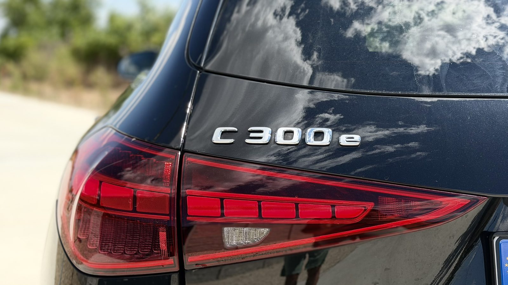

Päť typov pohonu
| Typ | Nabíjanie zo zásuvky | Jazda len na elektrinu |
|---|---|---|
| Mild hybrid (MHEV) | nie | nie |
| Plný hybrid (HEV) | nie | krátke úseky v meste |
| Plug-in hybrid (PHEV) | áno | bežne 40 až 80 km, novšie modely aj viac |
| Elektromobil s predĺženým dojazdom (EREV) | áno | podľa modelu zhruba 80 až 200 km, do budúcna sa ráta s ešte vyššími hodnotami |
| Elektromobil (BEV) | áno | celý dojazd |
Mild hybrid
Spaľovací motor s malým elektromotorom, ktorý pomáha pri rozbehu a umožňuje motoru vypínať sa pri dobiehaní. Na elektrinu samostatne nejazdí. Úspora paliva je malá, rádovo desatiny litra na sto kilometrov. Prakticky ide o benzínové alebo naftové auto.
Plný hybrid
Väčší elektromotor a batéria, ktorá sa nabíja len pri jazde a brzdení. V meste a v pomalých kolónach jazdí auto často na elektrinu, na diaľnici skoro vždy na benzín. Nič netreba nabíjať a v meste ušetríte viditeľne. Na dlhých trasách sa správa ako bežné benzínové auto.
Plug-in hybrid
Spaľovací motor a batéria, ktorú nabíjate zo zásuvky alebo z wallboxu. S nabitou batériou odjazdíte bežné denné trasy len na elektrinu, na dlhé cesty máte nádrž. Doma a na bežných stojanoch sa nabíja striedavým prúdom s výkonom 3,7 až 11 kW. Novšie plug-in hybridy a niektoré staršie Mercedesy zvládnu aj rýchlonabíjanie: napríklad Mercedes GLE 350 de od roku 2019 alebo novšie C 300 e a E 300 e s výkonom okolo 55 až 60 kW, nová Škoda Superb a Kodiaq do 50 kW. Pri starších a lacnejších plug-in hybridoch s rýchlonabíjaním väčšinou nepočítajte, preto si túto možnosť pri konkrétnom aute overte.
Elektromobil s predĺženým dojazdom (EREV)
Kolesá poháňa vždy elektromotor. Malý spaľovací motor kolesá nepoháňa, len vyrába elektrinu, keď sa batéria minie. Batériu nabíjate zo zásuvky rovnako ako pri plug-in hybride.
Treba rozlišovať dve generácie:
- Staršie autá s REX (range extender), najznámejšie BMW i3 REx. Malý pomocný motor s nádržou okolo deväť litrov pridá zhruba 100 až 150 km a slúži skôr ako núdzová rezerva. Dnes sa dajú kúpiť len jazdené.
- Moderné EREV, napríklad Leapmotor C10 REEV. Batéria pokryje bežné denné jazdy len na elektrinu a plnohodnotný generátor zvládne aj dlhú cestu bez nabíjania. Výber v Európe je zatiaľ malý, rozširujú ho najmä čínske značky.
Keď je batéria vybitá a idete po diaľnici, elektrinu vyrába spaľovací motor a spotreba paliva je podobná ako pri benzínovom aute. EREV sa preto najviac oplatí, ak väčšinu jázd odjazdíte na elektrinu a dlhé cesty sú výnimkou.
Elektromobil
Len batéria a elektromotor. Najnižšie náklady na energiu a servis, ale potrebujete mať kde nabíjať a na dlhých trasách počítať s dlhšími zastávkami.
Ktorý sa hodí na akú jazdu
| Ako jazdíte | Vhodný pohon |
|---|---|
| Krátke trasy, nabíjanie doma alebo v práci | elektromobil |
| Denne do 50 km, občas dlhá cesta, doma zásuvka | plug-in hybrid, moderný EREV alebo elektromobil |
| Veľa diaľnice, ťahanie ťažkého prívesu | nafta (resp. MHEV) |
| Mesto, bez možnosti nabíjať | plný hybrid |
| Málo kilometrov, hlavne lacná prevádzka | plný hybrid alebo menší elektromobil |
Plug-in hybrid má zmysel len nabíjaný
Plug-in hybrid sa oplatí, keď bežné denné jazdy odjazdíte na elektrinu a spaľovací motor necháte na diaľnicu. Ak ho nenabíjate, jazdí v hybridnom režime podobne ako plný hybrid: energiu z brzdenia využíva ďalej a spotreba je porovnateľná s plným hybridom. Prichádzate však o hlavnú výhodu, lacnú jazdu na elektrinu, a vyššia cena auta sa vám nevráti.
Ak viete, že nabíjať nebudete, siahnite radšej po plnom hybride. Ak nabíjať budete a dlhé trasy jazdíte len párkrát do roka, zvážte rovno elektromobil.
Peniaze a dane
- Prvá evidencia: elektromobil vždy 33 €. Pri plug-in hybride sa sadzba podľa výkonu násobí zvýhodneným koeficientom 0,2, takže napríklad 170 kW plug-in hybrid zaplatí 140 €. Bežné a mild hybridy platia ako spaľovacie autá podľa výkonu a emisnej normy.
- Cestná daň pri firemnom aute: elektromobil 0 €, hybridy so zníženou sadzbou o polovicu.
- EREV: dane a poplatky závisia od zápisu v osvedčení o evidencii (kolónka P.3). Autá nabíjateľné zo zásuvky sa v EÚ schvaľujú ako plug-in hybridy a pri moderných EREV býva v osvedčení uvedené PHEV. Vtedy majú rovnaké výhody ako plug-in hybrid. Pri konkrétnom aute si zápis overte.
- Služobné auto: elektromobil aj plug-in hybrid sa odpisujú dva roky a zamestnanec zdaňuje súkromné používanie sadzbou 0,5 % namiesto 1 %. Plný a mild hybrid tieto výhody nemajú. Podrobnosti v článku Elektromobil ako služobné auto.
- Nové aj jazdené: všetky uvedené výhody platia rovnako pre nové aj jazdené autá. Rozhoduje zápis v osvedčení o evidencii, nie vek auta.
- Servis: elektromobil má najmenej údržby. Hybridy majú bežný servis spaľovacieho motora vrátane oleja a filtrov, aj keď jazdíte prevažne na elektrinu.
Časté otázky
Aký je rozdiel medzi hybridom a plug-in hybridom?
Plný hybrid sa nabíja len počas jazdy a brzdenia, na elektrinu jazdí len krátke úseky. Plug-in hybrid má väčšiu batériu, ktorú nabíjate zo zásuvky, a bežné denné trasy odjazdí len na elektrinu.
Oplatí sa plug-in hybrid bez možnosti nabíjania?
Skôr nie. Bez nabíjania jazdí ako plný hybrid, ktorý by ste kúpili lacnejšie. Plug-in hybrid sa oplatí vtedy, keď bežné jazdy odjazdíte na elektrinu.
Platí pre plug-in hybrid nižšie zdanenie služobného auta?
Áno. Plug-in hybridy majú rovnako ako elektromobily sadzbu 0,5 % zo vstupnej ceny namiesto 1 % a patria do odpisovej skupiny s dobou odpisovania dva roky. Platí to aj pre jazdené autá.
Čo je EREV a čím sa líši od plug-in hybridu?
Pri EREV poháňa kolesá vždy elektromotor a spaľovací motor len vyrába elektrinu. Pri plug-in hybride môže kolesá poháňať aj spaľovací motor. Pre majiteľa je rozdiel hlavne v tom, že EREV sa za jazdy správa ako elektromobil.
Neviete sa rozhodnúť?
Sedem otázok o tom, ako jazdíte a kde môžete nabíjať. Výber elektromobilu ukáže, či vám sedí čistý elektromobil, alebo je rozumnejší plug-in hybrid.
 Koľko stojí jazda na elektrinu
Koľko stojí jazda na elektrinu Elektromobil ako služobné auto
Elektromobil ako služobné auto Wallbox doma
Wallbox doma